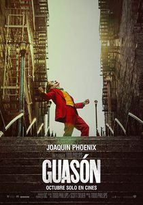

Annuar Shopping

Sinopsis:
Arthur Fleck es un hombre ignorado por la sociedad, cuya motivación en la vida es hacer reír.
Pero una serie de trágicos acontecimientos le llevarán a ver el mundo de otra forma.
Película basada en Joker, el popular personaje de DC Comics y archivillano de Batman, pero que en este
film toma un cariz más realista y oscuro..
Pais: USA Canada
Fecha de estreno: 04 Oct 2019